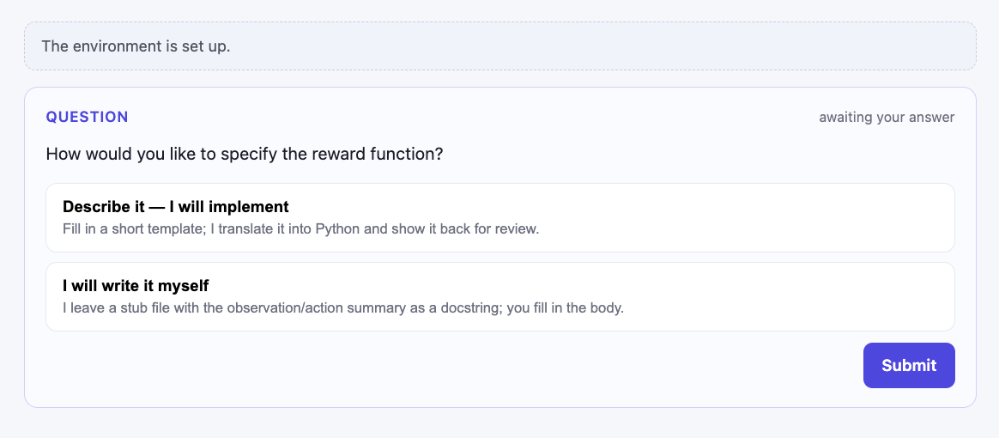
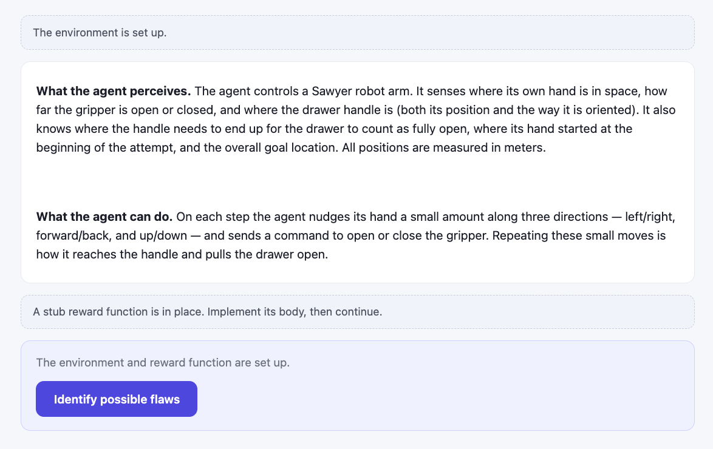
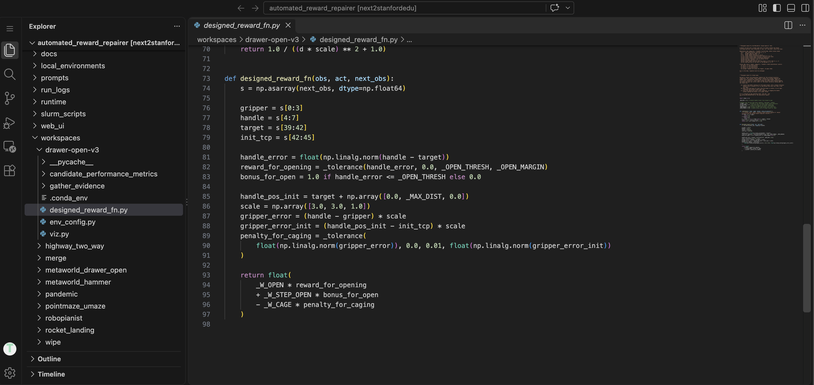
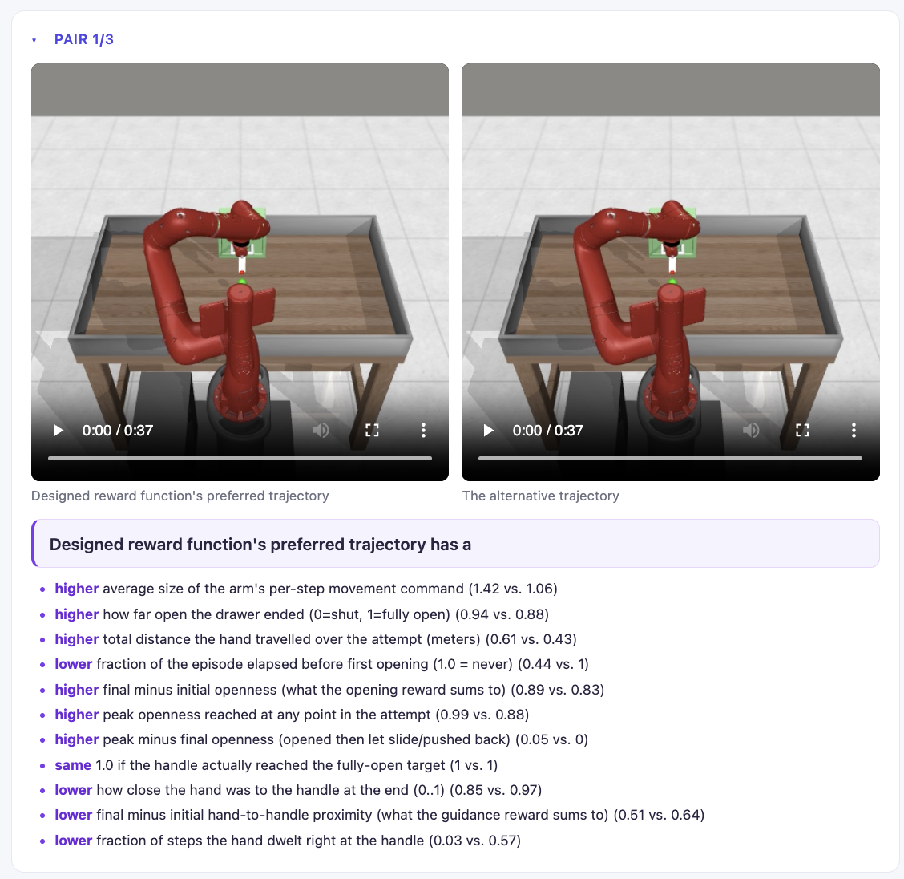
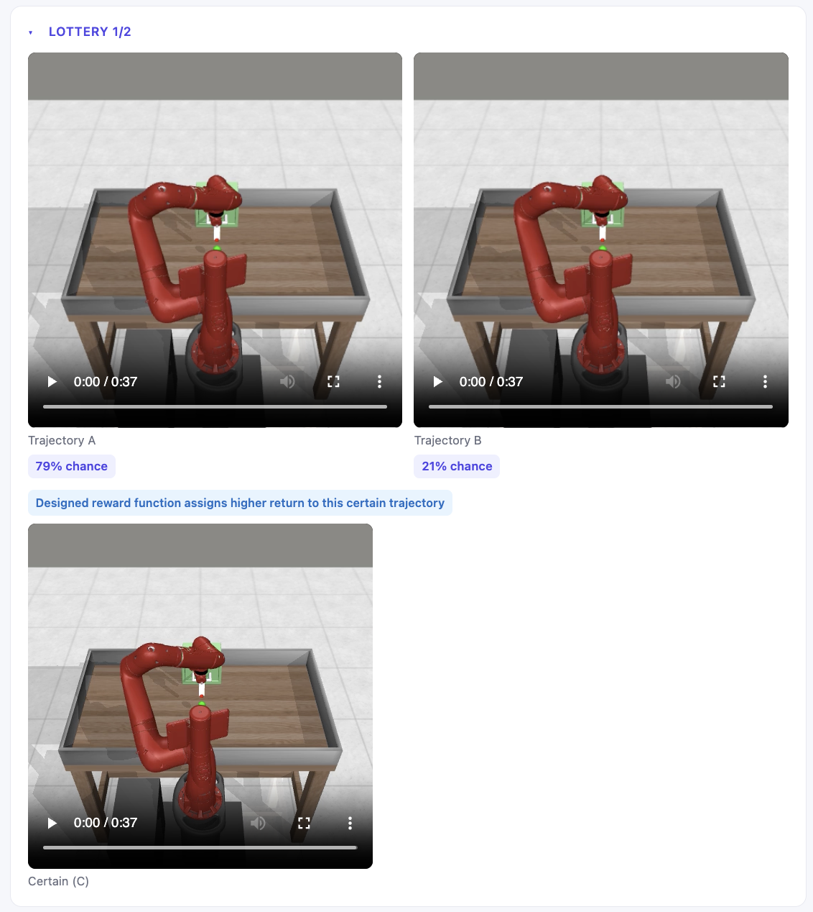

Discordance-Based Reward Debugger / Walkthrough
Once you have run /repair-setup <env_name> and opened http://127.0.0.1:8000, everything below happens on that page.
Discordance-Based Reward Debugger / Walkthrough
Once you have run /repair-setup <env_name> and opened http://127.0.0.1:8000, everything below happens on that page.
The first thing we will ask is how you want to specify a reward function. You can describe it in plain language and let Claude write the code, or you can write it yourself.

You will see this page. You will need to switch to your IDE and write the code for your reward function in workspaces/<your_env_name>/designed_reward_fn.py inside the cloned repo.

Open workspaces/<your_env_name>/designed_reward_fn.py in your IDE and fill in the body. This is the only time you will need to write code.

When you are done, return to your browser and press Identify possible flaws. You will be asked a few more quick questions, and then our system will spawn subagents to find flaws in your reward function.
We will show you hypothesized reward misspecifications in the form of trajectory pairs. The left trajectory is always the one your reward function assigns higher return to. The right trajectory is the one our system hypothesizes you might prefer instead. Underneath each pair is a one-line “why they disagree”.
The hypothesized misspecifications may not always be actual misspecifications! Expand the other trajectory pairs the system identified to see more.

Some hypotheses are shown as lotteries instead. A lottery asks: would you rather have the certain trajectory C, or a gamble that gives you trajectory A with one probability and trajectory B with the other? A badge marks which side your reward function assigns higher return to.

Below the comparisons, the page asks you to pick one:
Head back to the setup guide to get the tool running on your own environment.
Back to set up →